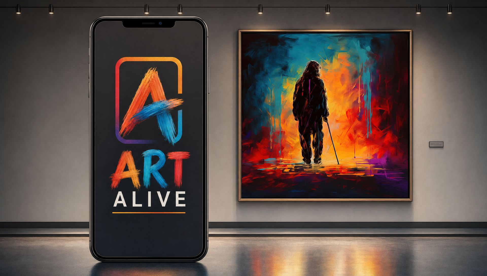

Marble Collect
Tunnel of Light
Steer the eyeball through a swirling tunnel and collect every star. Beeps lead you to the next one.
Play

Each of these was made in the Game Maker from a Blind Canvas Project painting. Play on your screen, or press Play on the painting and point your phone at the art.
Steer the eyeball through a swirling tunnel and collect every star. Beeps lead you to the next one.
PlayClear the mist and follow the beeps to three hidden treasures, each with its own story.
PlayFlip cards made from details of the painting. Every pair sings its own note.
PlayThe tunnel is in pieces. Slide them home; each one sings when it lands.
PlayHidden treasures, all in Spanish: the buttons, the voice and the stories. Busca los tres tesoros escondidos.
Play
Visit the live gallery to see every painting in the Blind Canvas Project move, speak and play.
Open the live galleryUpload an image or take a photo, then animate it or turn it into a game.